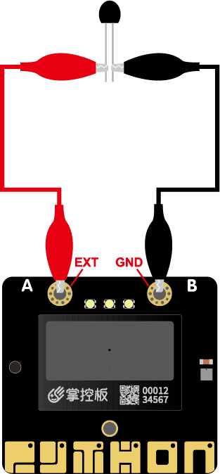
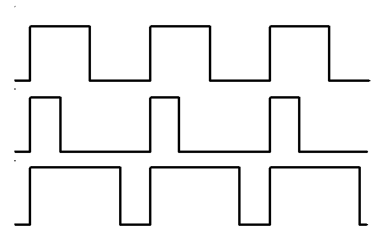

模拟IO
本章节介绍掌控板引脚的模拟输入输出的使用方法。引脚是您的电路板与连接到它的外部设备进行通信的方式。掌控板可以通过拓展板将IO引脚拓展并连接控制或读取其他元器件或模块。
注意
你可以查阅 掌控板接口引脚说明 ,了解可供使用的模拟引脚 。
模拟输入
掌控板可供使用的模拟输入引脚有 P0、P1、P2、P3、P4、P10,其中P4,P10分别被掌控板的光线和麦克风传感器使用。
什么是模拟输入呢？
模拟输入是将模拟信号转换为数字信号，简称ADC。
以下是使用P0引脚读取模拟输入:
from mpython import * # 导入mpython模块
p0=MPythonPin(0,PinMode.ANALOG) # 实例化MPythonPin,将P0设置为"PinMode.ANALOG"模式
while True:
value=p0.read_analog() # 读取P0引脚模拟量
print("analog:%d" %value)
from mpython import *
p0=MPythonPin(0,PinMode.ANALOG)
备注
MPythonPin 实例化。mode 设置为 PinMode.ANALOG 模拟输入模式。
读模拟输入:
p0.read_analog()
备注
因为adc采样数据宽度为12bit，所以满量程为4095。
EXT鳄鱼夹
接下来，你可以通过鳄鱼夹线将阻性元件(如光敏、热敏电阻)接到掌控板的 EXT 和 GND 焊盘 ,测量传感器的输入值变化……
EXT连接是掌控板的P3引脚:
from mpython import * # 导入mpython模块
p3=MPythonPin(3,PinMode.ANALOG) # 实例化MPythonPin,将P3设置为"PinMode.ANALOG"模式
while True:
value=p3.read_analog() # 读取EXT(P3)引脚模拟量
print("analog:%d" %value)
{kind=link}

模拟输出
什么是模拟输出呢？
电路板的引脚不能像音频放大器那样输出模拟信号 - 通过调制引脚上的电压。这些引脚只能使能全3.3V输出，或者将其下拉至0V。
然而，仍然可以通过非常快速地接通和断开该电压来控制LED的亮度或电动机的速度，并控制它的开启时间和关闭时间。
这种技术称为脉冲宽度调制（PWM），这就是 write_analog 的方法。
输出某电压的PWM信号:
from mpython import * # 导入mpython模块
p0=MPythonPin(0,PinMode.PWM) # 实例化MPythonPin,将P0设置为"PinMode.PWM"模式
voltage=2.0 # 电压2V
p0.write_analog(int(voltage/3.3*1023)) #计算对应电压PWM的占空比
备注
write_analog(value)中的value为PWM信号的占空比。由于IO引脚电压为3.3V，我们需要输出电压为2V。因此，映射值是2/3*1023。
由于计算出来的为浮点型数，我们还需要使用
int()转成整型。

您可以在上面看到三种不同PWM信号的图表。它们都具有相同的周期（因此具有频率），但它们具有不同的占空比。
第一个产生的是
write_analog(511)，因为它具有恰好50％的占空比 - 功率在一半的时间内，而在一半的时间内。结果是该信号的总能量是相同的，就好像它是1.65V而不是3.3V。第二个信号具有25％的占空比，可以用
write_analog(255)。它具有类似的效果，就好像在该引脚上输出0.825V一样。第三个信号具有75％的占空比，并且可以生成
write_analog(767)。它的能量是第二个信号的三倍，相当于在第二个引脚输出2.475V。